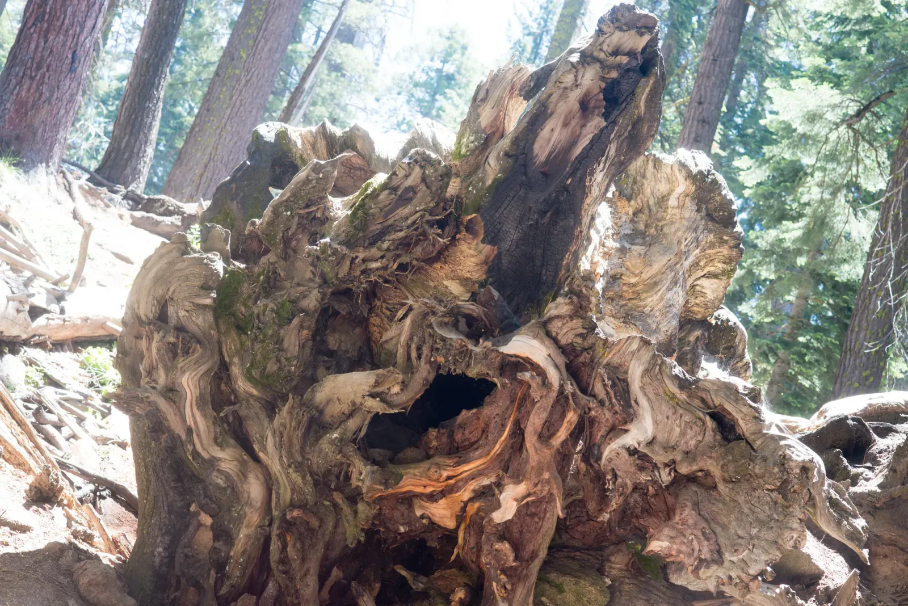

Old Growth
On the way to Grant Grove, in Kings Canyon National Park, the Jeep spent a stretch on a dirt road past stands of dead trees. Then the forest changed. The trunks got wider and the bark turned the color of cinnamon, and even the pines and firs, tall trees in their own right, started to look like saplings. Next to the base of one, the dog looked tiny. I never did figure out how to fit one of these trees in a frame.
Giant sequoias grow naturally in only one place on Earth, the western slope of the Sierra Nevada, and they are built for fire. Their bark can be two feet thick, so the old ones survive blazes that leave them charred and hollow, and they just keep growing. What usually brings one down is its roots, which spread wide instead of deep. Sooner or later, a giant simply tips over. Under one of the fallen giants, concrete steps lead through a tunnel, and I walked through it with the twisted wood curling overhead like a frozen wave.

Stand under trees that can live for thousands of years and you start thinking in centuries. My whole life so far would be a thin band of rings in the trunk of any one of them. At one point the sun sat right on top of a crown like the star on a Christmas tree. Christmas in July! It's fitting, since the grove's headliner, the General Grant, has been the Nation's Christmas Tree since 1926, and that tree is also why Grant Grove became a tiny national park of its own in 1890. From there the Generals Highway runs south into Sequoia National Park. It's slow and winding, so budget extra time, but the views make up for it: blue haze folding away into the distance, and what I think was Moro Rock rising over a stone wall.